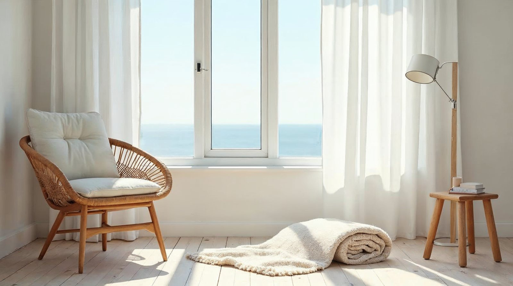
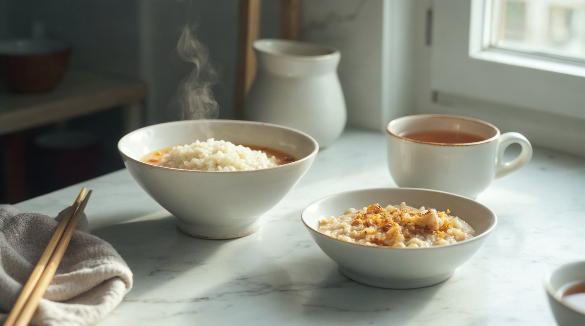
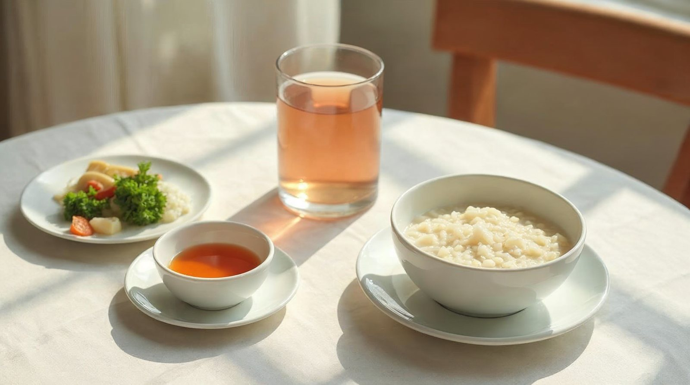
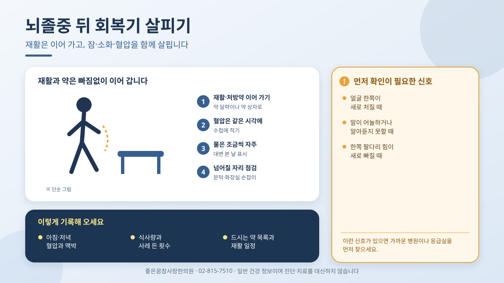

이종호 한의사 감수좋은꿈참사랑한의원 대표원장 (한의사 면허번호 19769)발행 2026-11-26 · 수정 2026-11-27
이 글의 차례
퇴원하고 집으로 돌아온 첫 주, 현관 문턱 하나가 이렇게 높았나 싶어요. 늘 앉던 식탁 의자에 앉는 데도 시간이 걸리고, 젓가락질은 한 손으로 하게 되죠. 곁에서 부축하는 가족도, 부축을 받는 본인도 말없이 마음이 무겁습니다. 재활 치료 일정표가 냉장고에 붙어 있고, 약 봉투가 식탁 한쪽에 쌓여 있고요.
뇌졸중은 뇌로 가는 혈관이 막히거나(뇌경색) 터져서(뇌출혈) 뇌 일부가 손상되는 병이에요.
급한 치료가 끝난 뒤 이어지는 회복기에는 재활의학과의 물리·작업·언어 치료와, 다시 뇌졸중이 오지 않도록 하는 처방약이 중심이 돼요. 저는 그 치료를 대신하려는 게 아니에요. 곁에서 잠과 소화, 변비, 어깨 통증, 기운, 그리고 돌보는 가족의 지침까지 함께 살피는 자리라고 생각해요.
진료실에서 이런 말씀을 자주 들어요. "재활은 열심히 하는데, 밤에 잠을 못 자고 변을 못 봐서 너무 힘들어요." 그러면 모시고 온 가족이 조용히 "저도 요즘 잠을 못 자요" 하고 덧붙이세요. 회복은 환자 한 사람의 일이 아니라 온 가족의 하루가 함께 바뀌는 일이라는 걸 그때마다 느낍니다.
그러니까 사실은 '재활'과 '재활을 버티는 몸'은 다른 얘기예요. 재활은 재활의학과에서 이끌고, 그 재활을 날마다 이어 갈 수 있게 잠과 밥과 대변을 받쳐 주는 일도 따로 필요하거든요.
왜 회복기에는 이렇게 여러 곳이 불편할까요
뇌졸중은 뇌의 한 부분이 다친 병이지만, 그 뒤의 불편은 온몸에서 나타납니다. 움직임을 맡은 부분이 다치면 한쪽 팔다리에 힘이 빠지고, 시간이 지나면서 오히려 근육이 뻣뻣하게 당기기도 합니다. 감각을 맡은 부분이 다치면 저리거나 화끈한 느낌이 남기도 합니다.
움직임이 줄면 장의 움직임도 함께 느려져 변비가 흔해집니다. 마비된 쪽 어깨는 팔의 무게를 받치지 못해 늘어지면서 아프기 쉽습니다. 삼키는 힘이 약해지면 식사 때 사레가 잘 들고, 누워 지내는 시간이 길면 낮과 밤의 리듬이 무너져 잠도 흔들립니다.
마음도 함께 흔들립니다. 뇌졸중 뒤에 우울감이 찾아오는 일이 드물지 않다고 알려져 있습니다. 어제까지 혼자 하던 일을 남의 손을 빌려야 하는 서러움, 다시 올까 하는 두려움이 겹칩니다. 그래서 몸만큼 마음도 같이 살펴야 합니다.
한의학에서는 뇌졸중을 중풍(中風)이라 부르며 오래전부터 살펴 왔습니다. 회복기의 몸을 볼 때는 마비된 쪽만이 아니라 잠과 소화, 대소변, 기운, 몸이 찬지 더운지를 함께 보며 몸 전체가 회복을 버틸 힘이 있는지를 읽으려 합니다.
재활 치료와 한의원 진료는 어떻게 나눌까요
회복기의 중심은 재활입니다. 뇌는 다친 뒤 처음 몇 달 동안 특히 활발하게 새 길을 만든다고 알려져 있어, 이 시기의 물리 치료와 작업 치료, 언어 치료, 삼킴 치료는 무엇과도 바꾸기 어렵습니다. 재활 일정은 빠지지 않고 이어 가시길 권합니다.
다시 뇌졸중이 오지 않게 하는 처방약도 마찬가지입니다. 피를 묽게 하는 약, 혈압약, 콜레스테롤약, 당뇨약은 처방한 의사와 상의 없이 줄이거나 끊으면 위험할 수 있습니다. "한약을 먹으니 양약은 좀 쉬어도 되지 않을까요?" 하는 질문을 받으면 저는 분명하게 그렇지 않다고 말씀드립니다.
한의원은 그 사이의 빈자리를 함께 봅니다. 재활을 받으러 다니기에도 지친 몸, 밤마다 깨는 잠, 며칠씩 이어지는 변비, 마비된 쪽 어깨의 통증, 떨어진 입맛, 그리고 곁에서 돌보는 가족의 허리와 잠까지요. 재활을 더 잘 이어 갈 수 있도록 하루를 받쳐 주는 쪽이라고 생각하시면 됩니다.
회복기에 흔히 함께 오는 불편
마비된 쪽 어깨 통증
마비된 팔은 스스로 무게를 받치지 못해 어깨 관절이 아래로 늘어지기 쉽고, 옷을 입히거나 자세를 바꿀 때 팔을 당기면 통증이 생길 수 있습니다. 앉아 있을 때는 팔을 쿠션이나 팔걸이 위에 올려 두고, 부축할 때는 마비된 쪽 팔을 잡아당기지 않도록 재활 치료사에게 방법을 배워 두시길 권합니다.
변비와 소화
움직임이 줄고, 물을 덜 마시고, 약이 늘면 변비가 쉽게 옵니다. 삼키기가 불편해 식사량이 줄면 더 그렇습니다. 하루 물 마시는 양과 식사, 대변 본 날을 적어 두시면 진료 때 함께 살피기 쉽습니다.
잠과 낮밤 리듬
누워 지내는 시간이 길면 낮에 졸고 밤에 깨는 일이 반복됩니다. 낮에 커튼을 열어 햇빛을 들이고, 가능한 시간에는 의자에 앉아 지내며, 잠드는 시각을 일정하게 맞추는 것부터 해 봅니다.
마음의 가라앉음
의욕이 없고, 눈물이 잦고, 재활도 하기 싫다는 말이 늘면 우울감이 찾아온 것일 수 있습니다. 게으름이나 의지 부족으로 탓하지 마시고 주치의에게 꼭 알려 주세요. 뇌졸중 뒤의 우울감은 치료가 필요한 경우가 있습니다.
예를 들면 이런 경우입니다
실제 어느 분의 사연이 아니라, 진료실에서 자주 듣는 모습을 바탕으로 그려 본 장면입니다.
예를 들어 재활병원 외래를 다니면서 밤에 두세 번씩 깨고, 사흘에 한 번 겨우 변을 보며, 마비된 쪽 어깨가 쑤신다는 어르신이 계실 수 있습니다. 이럴 때는 드시는 약을 먼저 모두 확인하고, 잠과 변비, 어깨를 하나씩 나누어 무엇부터 살필지 정합니다.
부모님을 돌보느라 몇 달째 잠을 설치고 허리가 아프다는 가족도 함께 오십니다. 돌보는 분이 먼저 쓰러지지 않아야 회복도 이어집니다. 이럴 때는 모시고 온 가족의 맥도 함께 짚어 드리곤 합니다.

돌보는 가족의 하루
뇌졸중 뒤 회복기는 대개 몇 달, 길게는 몇 해에 걸친 일입니다. 그 시간 동안 가족은 식사를 챙기고, 재활 치료에 모시고 다니고, 밤에도 화장실 가는 소리에 귀를 기울입니다. 그러다 보면 자신의 허리와 잠, 끼니는 늘 뒤로 밀려납니다.
진료실에서 돌보는 분께 "요즘 잠은 좀 주무세요?" 하고 여쭈면 눈시울이 붉어지는 경우가 많습니다. 아무도 그 질문을 해 주지 않았기 때문일 겁니다. 그래서 저는 모시고 오신 가족의 이야기도 따로 시간을 내어 듣습니다.
돌봄을 혼자 짊어지지 마시고, 형제나 이웃, 지역의 돌봄 서비스처럼 나눌 수 있는 손을 찾아보시길 권합니다. 돌보는 분이 건강해야 회복의 시간도 길게 이어 갈 수 있습니다.
회복을 바라보는 마음
회복은 계단처럼 오르기보다 오르락내리락하며 조금씩 나아가는 경우가 많습니다. 어느 주는 걸음이 늘었다가, 감기 한 번에 다시 처지기도 합니다. 그럴 때 실망하기보다 지난 한 달, 석 달을 나란히 놓고 보시길 권합니다.
먼저 이렇게 여쭙니다
처음 오시면 저는 대략 이런 순서로 여쭙습니다. 가족이 함께 대답해 주셔도 괜찮습니다.
- 뇌졸중은 언제, 뇌경색인가요 뇌출혈인가요? 어느 병원에서 치료받으셨나요?
- 지금 받고 계신 재활 치료는 무엇이고, 일주일에 몇 번인가요?
- 피를 묽게 하는 약, 혈압약, 당뇨약 등 드시는 약은 모두 무엇인가요?
- 식사 때 사레가 잘 들거나 삼키기 불편하지 않나요?
- 잠은 몇 시에 들고 밤에 몇 번 깨나요? 대변은 며칠에 한 번 보나요?
- 마비된 쪽 어깨나 팔다리에 통증, 저림, 당김이 있나요?
- 요즘 마음은 어떠신가요? 돌보는 가족은 잠을 주무시나요?
처방전이나 약 봉투, 퇴원 요약지를 가져오시면 하나하나 함께 보며 확인합니다. 혈압 수첩이 있다면 그것도 함께 보여 주세요.

일상에서 먼저 해 볼 수 있는 것
회복기의 하루를 조금 덜 힘들게 하는 요령입니다. 지금 할 수 있는 것 하나부터 골라 보세요.
- 재활 일정과 처방약은 빠지지 않게 이어 가기(약 달력이나 약 상자 쓰기)
- 혈압을 같은 시각에 재고 수첩에 적기
- 낮에는 커튼을 열고, 앉아 있는 시간을 조금씩 늘리기
- 삼키기 불편하다면 언어·삼킴 치료에서 안내받은 음식 형태와 자세 지키기
- 물은 조금씩 자주 마시고, 대변 본 날을 달력에 표시하기
- 집 안 문턱과 미끄러운 바닥, 화장실 손잡이 등 넘어질 자리 점검하기
넘어짐은 회복기에 특히 조심해야 할 일입니다. 밤에 화장실 가는 길에 작은 등을 켜 두고, 욕실에는 미끄럼 방지 매트와 손잡이를 두시길 권합니다.
돌보는 가족도 하루에 한 번은 자신을 위한 시간을 꼭 남겨 두세요. 짧은 산책, 따뜻한 차 한 잔이라도 괜찮습니다. 돌봄은 길게 이어지는 일이라, 오래 버틸 힘을 아껴 두는 것도 돌봄의 일부입니다.
집 안에서 함께하는 작은 움직임
재활 치료실에서 배운 동작은 집에서도 이어 갈 때 힘을 얻습니다. 치료사에게 집에서 해도 되는 동작과 횟수를 적어 달라고 부탁해 두시고, 텔레비전을 보는 시간이나 식사 전처럼 하루의 정해진 때에 묶어 두면 잊지 않기 쉽습니다.
마비된 쪽 손을 식탁 위에 올려 두고 함께 쓰려 애쓰는 것, 가족이 그쪽에서 말을 걸어 주는 것도 일상 속 작은 연습이 됩니다. 무리하지 않는 선에서, 배운 범위 안에서 하시길 권합니다.

한의원에서 함께 살필 수 있는 경우
- 재활 치료를 받으면서 잠과 소화, 변비를 함께 살피고 싶은 경우
- 마비된 쪽 어깨 통증이나 팔다리 당김, 저림이 불편한 경우
- 기운이 떨어지고 입맛이 줄어 재활을 이어 가기 힘든 경우
- 돌보는 가족이 허리와 어깨 통증, 잠 부족으로 지친 경우
좋은꿈참사랑한의원에 처음 오시면 모든 분의 맥을 먼저 짚으며 잠과 소화, 체온, 대소변을 여쭙습니다. 그다음 뇌졸중 치료 경과와 재활 일정, 드시는 약을 확인합니다. 필요하다고 판단되어 진료실에서 잰 혈압이 너무 높거나 낮으면 그날은 진료보다 주치의 확인을 먼저 안내합니다.
진찰 뒤 필요하다고 판단되면 침을 상의합니다. 피를 묽게 하는 약을 드시는 분은 멍이나 출혈이 생기기 쉬워 자리와 방법을 더 조심스럽게 정합니다. 감각이 둔한 쪽에는 온열 물리치료를 쓸 때 화상에 특히 주의합니다.
한약은 진찰 뒤 필요하다고 판단될 때 잠과 소화, 기운을 보며 상의합니다. 피를 묽게 하는 약이나 혈압약, 당뇨약과 함께 드셔도 되는지 신중하게 확인하고 정하며, 필요하면 주치의와 상의하시도록 안내합니다.
다시 오시면 지난번 이후 잠과 대변, 어깨 통증, 혈압 기록이 어땠는지부터 이어서 여쭙습니다. 재활병원에서 들은 이야기도 함께 들려주시면 같은 방향을 보고 이어 갈 수 있습니다.
진료 날을 덜 힘들게 보내는 요령
재활 치료와 병원 외래, 한의원 진료가 겹치면 하루가 이동만으로 지치기 쉽습니다. 가능하면 같은 날 몰아서 잡기보다 하루에 한 곳씩 나누고, 이동 전후에는 충분히 쉬는 시간을 두시길 권합니다. 진료 시간은 방문 전 전화로 확인해 주세요.
휠체어나 보행 보조기를 쓰신다면 건물 출입과 이동 방법을 방문 전 전화로 확인해 주세요. 보호자 한 분이 함께 오시면 진료 중 이야기를 나누기도 한결 편합니다.
이렇게 기록해 오시면 상담이 쉬워집니다
회복기에는 챙길 게 많아서 기록이 큰 힘이 돼요. 가족이 대신 적어 주셔도 좋아요.
- 아침·저녁 혈압과 맥박(같은 시각, 같은 자세로)
- 잠든 시각과 깬 시각, 밤에 깬 횟수
- 대변 본 날과 상태, 하루 마신 물의 양
- 식사량과 사레가 든 횟수
- 마비된 쪽 통증과 당김이 심했던 때
- 드시는 약 목록과 바뀐 약, 재활 치료 일정
기록은 완벽하지 않아도 돼요. 빠진 날이 있어도 괜찮아요. 적어 오신 만큼 그 줄부터 함께 얘기하면 되거든요.
회복기는 하루하루가 작은 걸음이에요. 어제보다 한 걸음 더 걸은 날도, 그렇지 못한 날도 있어요. 원래 그래요. 그 모든 날을 버텨 내고 계신 본인과 가족 모두 정말 애쓰고 계세요.
잠과 소화, 어깨처럼 회복을 받치는 쪽을 살피는 건 제가 맡을게요. 대신 하나만 부탁드려요. 재활 치료실에서 배운 동작 하나를 식사 전이나 텔레비전 보는 시간처럼 하루의 정해진 때에 묶어 두세요. 세게 말고 약하게, 오래, 매일이요. 딴 건 하시던 대로 편하게 하셔도 돼요.
다음에 오시면 지난 한 주 잠과 대변, 혈압이 어땠는지부터 여쭐게요. 돌보시는 가족분도 궁금한 건 그냥 편하게 물어보세요.
이런 증상은 먼저 확인이 필요합니다
- 얼굴 한쪽이 새로 처지거나, 말이 어눌해지거나, 말을 알아듣지 못하는 경우
- 한쪽 팔다리에 힘이 새로 빠지거나 감각이 둔해진 경우
이런 신호가 있으면 한의원보다 가까운 병원이나 응급실을 먼저 찾으세요.
함께 읽으면 좋은 글
- 고혈압 진단을 받았거나 경계라는 말을 들었다면 생활에서 무엇부터 살피나요?
- 추운 아침마다 혈압이 높게 나올 때 집에서는 어떻게 재고 기록하나요?
- 혈압약이나 당뇨약을 먹고 있는데 한약을 함께 먹어도 되는지 어떻게 확인하나요?
- 연세 드신 부모님을 모시고 처음 한의원에 갈 때는 무엇을 챙기면 좋을까요?

여쭙는 것
- 뇌졸중은 언제, 뇌경색인가요 뇌출혈인가요? 어느 병원에서 치료받으셨나요?
- 지금 받고 계신 재활 치료는 무엇이고, 일주일에 몇 번인가요?
- 피를 묽게 하는 약, 혈압약, 당뇨약 등 드시는 약은 모두 무엇인가요?
생활에서 해 볼 것
- 재활 일정과 처방약은 빠지지 않게 이어 가기(약 달력이나 약 상자 쓰기)
- 혈압을 같은 시각에 재고 수첩에 적기
- 낮에는 커튼을 열고, 앉아 있는 시간을 조금씩 늘리기
한의원에서 함께 살필 것
- 재활 치료를 받으면서 잠과 소화, 변비를 함께 살피고 싶은 경우
- 마비된 쪽 어깨 통증이나 팔다리 당김, 저림이 불편한 경우
- 기운이 떨어지고 입맛이 줄어 재활을 이어 가기 힘든 경우
먼저 확인이 필요한 신호
- 얼굴 한쪽이 새로 처지거나, 말이 어눌해지거나, 말을 알아듣지 못하는 경우
- 한쪽 팔다리에 힘이 새로 빠지거나 감각이 둔해진 경우
한눈에 보는 표
| 구분 | 핵심 |
|---|---|
| 여쭙는 것 | 뇌졸중은 언제, 뇌경색인가요 뇌출혈인가요? 어느 병원에서 치료받으셨나요? 지금 받고 계신 재활 치료는 무엇이고, 일주일에 몇 번인가요? |
| 생활에서 해 볼 것 | 재활 일정과 처방약은 빠지지 않게 이어 가기(약 달력이나 약 상자 쓰기) 혈압을 같은 시각에 재고 수첩에 적기 |
| 한의원에서 함께 살필 것 | 재활 치료를 받으면서 잠과 소화, 변비를 함께 살피고 싶은 경우 마비된 쪽 어깨 통증이나 팔다리 당김, 저림이 불편한 경우 |
| 먼저 확인이 필요한 신호 | 얼굴 한쪽이 새로 처지거나, 말이 어눌해지거나, 말을 알아듣지 못하는 경우 한쪽 팔다리에 힘이 새로 빠지거나 감각이 둔해진 경우 |
자주 묻는 질문
재활병원에 다니면서 한의원 진료를 같이 받아도 되나요?
재활 치료와 처방약을 그대로 이어 가는 것을 전제로 함께 받으실 수 있습니다. 처음 오실 때 재활 일정과 드시는 약을 모두 알려 주시면 확인한 뒤 진찰을 거쳐 정합니다.
피를 묽게 하는 약을 먹고 있는데 침을 맞아도 되나요?
드시는 약을 먼저 확인하고, 멍이나 출혈이 생기기 쉬운 점을 고려해 자리와 방법을 더 조심스럽게 정합니다. 약은 처방한 의사와 상의 없이 줄이거나 끊지 않습니다.
한약을 먹으면 양약을 줄여도 되나요?
그렇지 않습니다. 다시 뇌졸중이 오지 않도록 하는 약은 처방한 의사와 상의 없이 줄이거나 끊으면 위험할 수 있습니다. 한약은 드시는 약을 확인한 뒤 함께 드셔도 되는지 신중하게 정합니다.
돌보는 가족도 진료를 받을 수 있나요?
네, 함께 오시면 가족분의 이야기도 따로 듣고 맥을 짚어 드립니다. 돌보는 분의 잠과 허리, 어깨도 회복을 이어 가는 데 중요한 부분입니다.
좋은꿈참사랑한의원은 재진 때 지난번 이야기부터 이어서 여쭙니다. 진료시간과 예약은 오시는 길에서 확인하세요.
어디서 상담받을 수 있나요?
좋은꿈참사랑한의원은 서울 동작구 만양로2길 2 신성빌딩 3층·5층(서울 동작구 상도동, 7호선 상도역 3번 출구 근처)에 있습니다. 한의사 3명(이종호 대표원장, 조영기 수석진료원장, 정원영 진료원장)이 진료합니다. 진료시간은 평일 09:30~20:00(점심 13:00~14:00), 토·일·공휴일 09:30~15:00이며, 방문 전 전화로 확인을 권합니다. 예약은 네이버 예약, 카카오톡 상담, 전화 02-815-7510로 받습니다.
이 글은 일반적인 건강 정보이며 개인의 진단이나 치료를 대신하지 않습니다. 증상이 있거나 복용 중인 약이 있다면 진료를 통해 확인하세요. 치료 효과는 개인마다 다를 수 있습니다.
작성 기준: 일반적으로 알려져 있는 건강 정보를 참고해 정리했습니다(대표원장 감수). 증상 기록은 1~2주 동안 하루 1회, 비슷한 시간에 적어 오시면 지난 상태와 비교하기 쉽습니다.